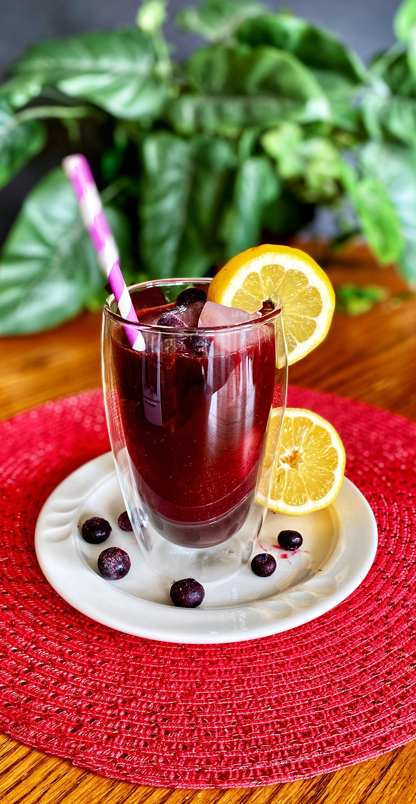

Blueberry Lemonade Recipe

An easy recipe to quench your thirst for lemons and blueberries
This recipe was inspired by my love for blueberries and lemonade. It is also
inspired by the fact that I only have those two things in my fridge. I hope you
have lemons and blueberries in your fridge too.
Ingredients
1/4 cup of sugar
1/4 cup of fresh lemon juice
9 cups of water more or less
Steps
- Add all ingrediets together in a pitcher and mix well until sugar is incorporated
- Add lots of ice or let chill for a few hours and enjoy